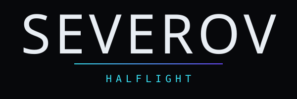

SEVEROV / PRESS ASSETS
PRESS ASSETS
Photos, logos, bios, rider, stage plot, admat template and social loops. No form, no login, no request needed.
01Bios
SEVEROV is a techno producer and DJ based in Bristol. She plays long sets at 132 to 142 BPM with electro and broken-beat material at the edges, runs her own imprint HALFLIGHT, and performs a hybrid live A/V show alongside the DJ set. Her fourth EP, Second Sleep, is out now on HALFLIGHT.
SEVEROV is a techno producer and DJ based in Bristol, UK. A club artist first, she is known for long sets, open to close when the room can take it, and for reading a floor rather than playing a prepared hour. The records sit between 132 and 142 BPM, with electro and broken-beat material at the edges.
She runs her own imprint, HALFLIGHT, which has released her four EPs — Cold Start, Substation, Ferrite and, in 2026, Second Sleep — alongside records by other artists. A steady remix practice runs in parallel, with reworks for Ansel Vey, MOTH LANGUAGE, Ilka Brandt and TIDEGLASS.
Alongside the DJ set she performs a hybrid live A/V show built around two players, a drum machine and a controller. She plays clubs across Europe, the UK, North America and Australia, and is moving into festival main-support slots, which exist to pay for the club nights.
SEVEROV is the name Mira Severov has recorded and played under since the first HALFLIGHT record in 2022. She is based in Bristol, where she learned to DJ in small rooms that stayed open late and punished anyone who played a prepared hour. That is still the job as she describes it: arrive early, stand on the floor, find out what the room can take, and build the set from there.
Her records sit between 132 and 142 BPM. The core is peak-time techno, cold and physical, with electro and broken-beat material at the edges that surfaces most in the longer sets. Cold Start (HLF001, 2022) was the first release; Substation (HLF004, 2023) and Ferrite (HLF009, 2025) followed. Second Sleep (HLF014, 2026) is the fourth EP and the current cycle: five tracks, from the 132 BPM drift of Static Bloom to the 142 BPM Magnetic North.
HALFLIGHT exists because the two labels that wanted Cold Start both wanted eighteen months and the masters. She runs the imprint herself. It has released fourteen records, four of them by other artists, and keeps an open demo policy: one link, one track, no biography, and an answer inside a month.
A steady remix practice runs alongside the originals, including reworks for Ansel Vey, MOTH LANGUAGE, Ilka Brandt and TIDEGLASS. Every month she records a full-length Transmission mix, and club and festival recordings are published in full wherever the promoter allows, none of them edited down for a platform.
In 2025 she debuted a hybrid live A/V show: two media players, a mixer, a controller and a drum machine, performed against a video feed built for each room. It runs 55 to 75 minutes and is programmed at festivals and A/V events, while the DJ set remains the centre of the work.
She plays clubs and festivals across Europe, the UK, North America and Australia and is moving into festival main-support slots. The festival slots exist to pay for the club nights, not the other way round. Bookings are handled by Lowland Artists in the UK and Europe and by Ninth Street Touring in North America and Australia. The full technical rider, stage plots and press assets are public on her site.
02Press photographs
Approved for editorial and event-promotion use in connection with SEVEROV appearances. The photographer's credit must run with the image. Do not crop out the credit, do not composite, do not use for unrelated commercial purposes.
DOWNLOAD: demo build, file not includedPhoto: Kesia Oyelaran
DOWNLOAD: demo build, file not includedPhoto: Dimitar Anev
DOWNLOAD: demo build, file not includedPhoto: Kesia Oyelaran
DOWNLOAD: demo build, file not includedPhoto: Roan Whitby
DOWNLOAD: demo build, file not includedPhoto: Dimitar Anev
DOWNLOAD: demo build, file not includedPhoto: Roan Whitby
Build note: photographer credits are contractual in most photographer agreements, club photographers are the most frequently uncredited people in the industry, and for a real client every name and licence term is confirmed before launch.
03Logo and wordmark



SVG · HALFLIGHT lockup · 1 KB
Keep clear space around the wordmark equal to the width of the O. Never recolour it outside Cold White and Void, never outline it, never set the name in a different face, and the name is always all caps: SEVEROV, never Severov.
04Admat pack
The name is already set correctly, so your designer never retypes or re-sets it. Drop in the date, venue and city.
- VOID #07080B
- COLD WHITE #E9EEF4
- SIGNAL CYAN #39E1F5
- ULTRAVIOLET #6B4BFF
- GUNMETAL #101319
The story loop is silent and graded with no flashing; it is built from a licensed stock stand-in image (Photo: Roan Whitby · demo stand-in image: Jorik Kleen / Unsplash).
05Technical rider
LAST UPDATED 01.09.2026
- R-01Performance rig, DJ. 4 media players of the same model and firmware, networked, with USB input. A 4-channel club mixer with independent booth output. USB only; there is no vinyl in the DJ set.
- R-02Performance rig, hybrid live A/V. 2 media players and a 4-channel mixer as above, plus a table for a controller, drum machine and laptop. 2x active DI at the table. Artist brings the controller, drum machine and laptop.
- R-03Mixer requirements. 4 channels minimum, independent booth output with its own level, a 3-band EQ per channel. Acceptable substitutes: any 4-channel club-standard mixer with a separate booth send. A 2-channel mixer is not a substitute. If unsure, name the model in the enquiry.
- R-04Booth monitors. 2x 12" or 15" minimum, on a separate mix from front of house, positioned at ear height either side of the booth, not below it, angled at the artist.
- R-05Monitor level. Booth monitors must be controllable from the mixer's booth output. You will not be asked to turn the room up, only the booth.
- R-06Second monitor mix. Open to close only: a second, independent monitor mix for the long set, so the booth can be rebalanced as the room fills without touching front of house.
- R-07Power. 2x UK/EU sockets at the booth, on a clean circuit that is not shared with lighting or haze.
- R-08Booth stability. A solid, level booth that does not move with the floor. Players and mixer isolated from bass vibration.
- R-09Booth lighting. Low, not off, not on the artist's face. Enough to read the players; nothing pointed into the booth.
- R-10Sound limiter. If the room has a limiter, say so in the enquiry, it changes the set. State the threshold and whether it is at the mixer or the amps.
- R-11Soundcheck or line check, DJ. A 15-minute line check at any point before doors, or during the changeover if the room is already open.
- R-12Soundcheck, hybrid live A/V. A 45-minute soundcheck including video feed, before doors, with the FOH engineer and the video technician present.
- R-13Arrival time. Artist arrives at the venue no later than 60 minutes before set time for DJ, 3 hours before for the live show.
- R-14Named contacts. A named FOH engineer and a named technical contact, with phone numbers, sent 48 hours before the show.
- R-15Changeover. At least 10 minutes of changeover for DJ. At least 20 minutes for the live show, with the previous act's equipment clear of the table.
- R-16Video feed. Live A/V only: projection or LED input at 1920x1080 60fps via HDMI, run from the performance table, with a spare HDMI cable of the same length.
- R-17Technical advance. The live show needs a tech advance call two weeks out. If the advance has not happened by then, the DJ set is performed instead, at the same fee.
- R-18Recording. No audio or video recording of the set for release without written agreement. Phone footage from the floor is fine.
06Stage plot and input list
DJ set
| Label | Element | Position / spec |
|---|---|---|
| BOOTH | Booth surface | 2.4m wide × 0.8m deep, 1.0m high, level and isolated |
| P1–P4 | Media players | 4 of the same model and firmware, networked, 2 either side of the mixer |
| MIXER | 4-channel club mixer | Centre of booth, independent booth output (R-03) |
| MON L / MON R | Booth monitors | 2× 12" or 15", either side, ear height, angled at the artist, separate mix (R-04) |
| SOCKETS | Power | 2× UK/EU sockets at the back of the booth, clean circuit (R-07) |
| ARTIST | Artist position | Front of booth, facing the dancefloor |
Hybrid live A/V
| Label | Element | Position / spec |
|---|---|---|
| TABLE | Performance table | 1.6m × 0.8m, 1.0m high, facing the audience |
| P1 / P2 | Media players | Venue supplied, either side of the mixer, left half of table |
| MIX | 4-channel mixer | Between P1 and P2 |
| CONTROLLER | Controller | Right of P2, front edge. Artist supplied |
| DRUM MACH. | Drum machine | Right of P2, back edge. Artist supplied |
| LAPTOP | Laptop, video source | Back right corner of table. Artist supplied |
| DI 1 · DI 2 | Active DI boxes | Front right corner of table, feeding FOH |
| HDMI | Video run | Laptop to projection or LED input, 1920×1080 60fps, spare cable of same length (R-16) |
| MON L / MON R | Monitors | Either side of table at ear height, separate mix |
| POWER | Power | At the rear of the table, 2 points |
07Hospitality
This is short on purpose. Nothing here is a demand and anything can be discussed.
- H-01Ground transfer from the airport or station.
- H-02Accommodation: one twin or two singles for the live show, checkout after 12:00.
- H-03A hot meal, or a per-diem where the kitchen is closed.
- H-04Still water and towels at the booth.
- H-05A quiet room or an office for 30 minutes before the set.
- H-064 guest list.
- H-07A named person to meet on arrival.
08Set options and durations
09Streaming and platform links
- BANDCAMP
- severov.bandcamp.demo
- SPOTIFY
- open.spotify.demo/severov
- APPLE MUSIC
- music.apple.demo/severov
- SOUNDCLOUD
- soundcloud.demo/severov
- YOUTUBE
- youtube.com/@severov.demo
- LABEL
- halflight.demo
- DJ LISTINGS
- djlistings.demo/severov
- instagram.com/severov.demo
10Contacts
Booking
booking@severov.demoLowland Artists (UK/EU), Ninth Street Touring (NA/AU).
Use the form, it is faster.
Sync and licensing
sync@severov.demoMasters and publishing both controlled in-house, so clearance is one conversation.
BOOKING, UK + EUROPE → Lowland Artists · NORTH AMERICA + AUSTRALIA → Ninth Street Touring
11One-sheet
One printable page: photo, 60-word bio, current release, three press quotes, set options, contacts.
ILLUSTRATIVE PRESS QUOTES — INVENTED PUBLICATIONS, DEMO CONTENT
“Three hours in a room with no windows and no drop in tension.”
— Low Ceiling“The remixes are better than most people's originals, which is a problem she has created for herself.”
— Static Quarterly“Plays like somebody who has stood on the floor of the room she is in.”
— Cold Store Review